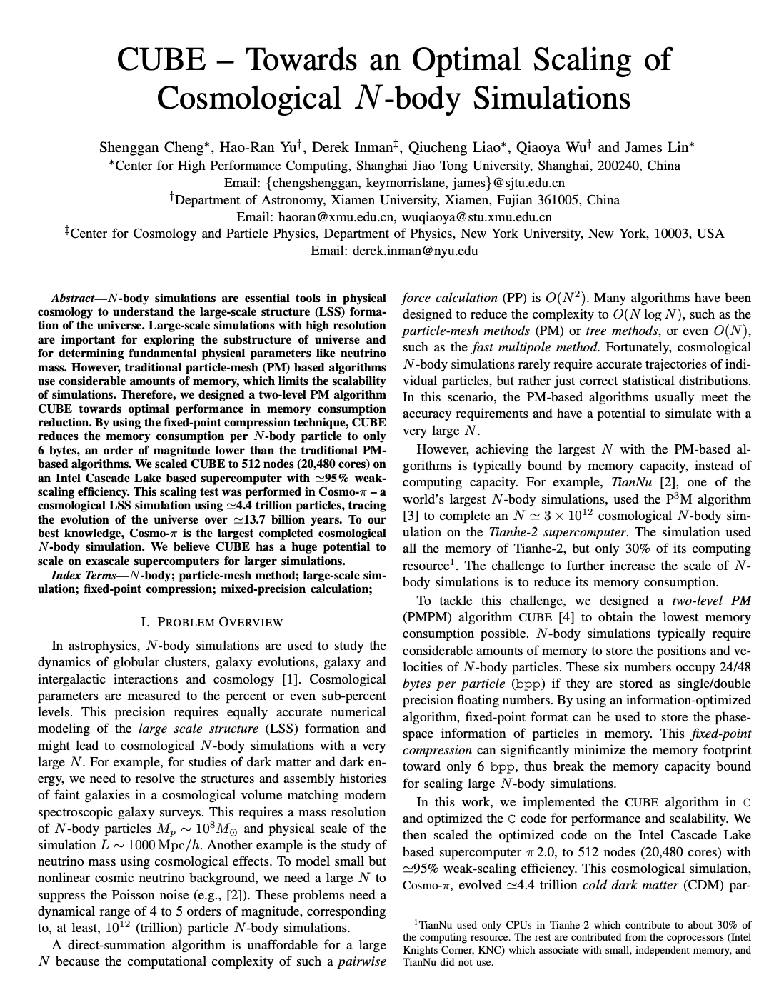

 Abstract: N-body simulations are essential tools in physical cosmology to understand the large-scale structure (LSS) formation of the universe. Large-scale simulations with high resolution are important for exploring the substructure of universe and for determining fundamental physical parameters like neutrino mass. However, traditional particle-mesh (PM) based algorithms use considerable amounts of memory, which limits the scalability of simulations. Therefore, we designed a two-level PM algorithm CUBE towards optimal performance in memory consumption reduction. By using the fixed-point compression technique, CUBE reduces the memory consumption per N-body particle to only 6 bytes, an order of magnitude lower than the traditional PMbased algorithms. We scaled CUBE to 512 nodes (20,480 cores) on an Intel Cascade Lake based supercomputer with ≈95% weakscaling efficiency. This scaling test was performed in Cosmo-π – a cosmological LSS simulation using ≈4.4 trillion particles, tracing the evolution of the universe over ≈13.7 billion years. To our best knowledge, Cosmo-π is the largest completed cosmological N-body simulation. We believe CUBE has a huge potential to scale on exascale supercomputers for larger simulations.
Method
CUBE solves the gravitational force using the PMPM algorithm, with optional extended-PP force modules for increased accuracy. The traditional PM-based algorithm is suboptimal in parallel computing as it requires a full resolution parallel FFT. While PMPM algorithm solves this problem by splitting the gravitational force into a short-range force and a long-range force. Long-range force requires a global FFT on global coarse-mesh and short-range force requires a local FFT on fine-mesh.
The PMPM algorithm is intrinsically memory efficient, and the memory consumption is thus dominated by the phase-space coordinates of particles. CUBE is information-optimized and further reduce this memory footprint by using fixed-point formats instead of float-point formats. Instead of using a 4/8-byte float/double storing each particle’s phase information, CUBE use 1/2-byte fixed-point to represente particle’s phase information. Due to using fixed-point compression, CUBE has significantly smaller bpp than any other cosmological N-body simulation codes and only 12.8 bytes per particle (bpp). For example, TianNu Simulates 2.97 trillion particles on Tianhe-2 which has 186 bpp, which is 14.5 times larger than CUBE’s bpp.
Simulation
We use 4,096 MPI processes on 512 nodes (≈80% of the full system of π 2.0) to evolve 163843 ( ≈ 4.39 × 1012 ) cold dark matter particles in a (3.2 Gpc/h)3 cosmological volume. We use the Zel’dovich Approximation to determine the initial positions and velocities of particles at redshift z = 99 and then use CUBE to evolve the particles to z = 0. The simulation models a ΛCDM universe with Hubble parameter H0 = 100h km s-1 Mpc-1, CDM density Ωc h2 = 0.1109, baryon density Ωb h2 = 0.0228 and initial conditions characterized by σ8 = 0.80 and ns = 0.96. For fixed-point compression, we use the 1-byte fixed-point format to store the particle phase space.
Performance
To study the weak-scaling of CUBE, we allow each process to evolve a 200 Mpc/h volume using 10243 fine cells and gradually scale from 40 cores to 20,480 cores. Figure below shows CUBE’s weak-scaling result both with and without the PP force (PM-PM-PP and PM-PM in the legend). We see an almost perfect linear speed achieving 95% parallel efficiency in both cases. For comparison, the TianNu simulation had 72% weak-scaling efficiency; although we note that this scaling test was done at redshift z = 5 where nonlinear structure substantially increases iterations of the PP force kernel.
Citation
Bibilographic information for this work:
S. Cheng*, HR. Yu*, D. inman, Q. Liao, Q. Wu and J. Lin. "CUBE -- Towards an Optimal Scaling of Cosmological N-body Simulations." International Symposium on Cluster, Cloud and Internet Computing (CCGRID, SCALE), 2020. [PDF]
(*first two authors contributed equally.)
@INPROCEEDINGS{9139651,
author={S. {Cheng} and H. {Yu} and D. {Inman} and Q. {Liao} and Q. {Wu} and J. {Lin}},
booktitle={2020 20th IEEE/ACM International Symposium on Cluster, Cloud and Internet Computing (CCGRID)},
title={CUBE – Towards an Optimal Scaling of Cosmological N-body Simulations},
year={2020},
volume={},
number={},
pages={685-690}
}
Acknowledgement: This work was partly supported by the National Key Research and Development Program of China 2016YFB0201800 and National Science Foundation of China No.11903021. And thank HPC Center of Shanghai Jiao Tong University for providing computing resource and excellent technical support.
Media
Shanghai Jiao Tong University π 2.0 achieves a new breakthrough in Cosmological N-body Simulation. Shanghai Jiao Tong University Network Information Center, Department of Astronomy and Xiamen University Astronomy Department and other units, relying on Shanghai Jiao Tong University supercomputing platform (π 2.0 cluster), successfully completed the 4.4 trillion particle N-body simulation -- Cosmo-π (using 512 nodes, 20480 cores), tracked the evolution of the universe since 13.7 billion years, and broke the previous TianNu Simulation world record of 3 trillion particles (using 13824 nodes, 331776 cores) Has become the world's largest astronomical N-body simulation with the largest number of particles.

{kind=link}
{kind=link}
{kind=link}
{kind=link}